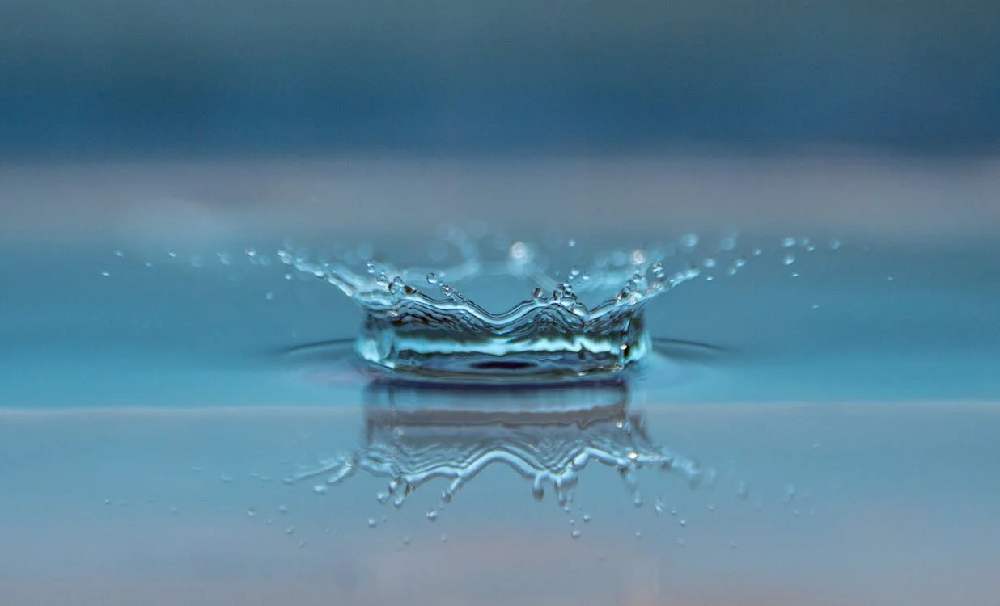
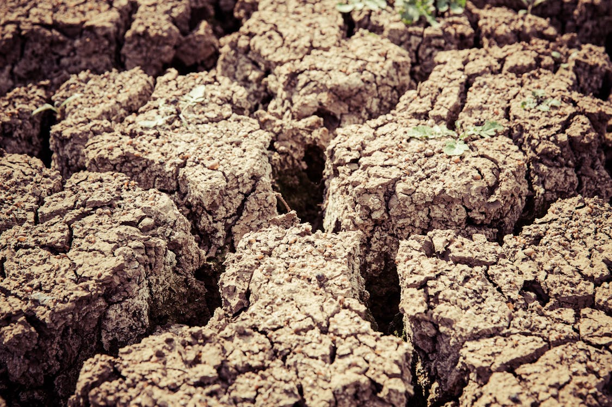

Air
Air is a mixture of gases that is composed of 78% Nitrogen, 21% Oxygen and a very small percentage of water vapor and other gases. The fact that air contains so much oxygen is not because the earth provided us the atmosphere with that composition, but because living things like plants produced oxygen for over 2 billion of years ago from carbon dioxide.

Water
Water is called the medium of life. All life on the planet requires water (there are some forms of life that can live without air) because all the chemical reactions that occur in living cells occur using water as a medium. Water is found in large bodies like the ocean, seas, rivers, and lakes. It is also found in the atmosphere as vapour and as a solid in snow, glaciers and ice shelves.

Soil
The minerals useful for life are found in the upper crust of the earth. But most of these are found in rocks, which cannot be used by plants or animal. Instead, we need them crushed in small particles which we call soil. The soil is formed by the breaking up of rocks by various geological, climatic and biological processes. Soil contains minerals such as Iron, Zinc, Nitrogen compounds, etc.